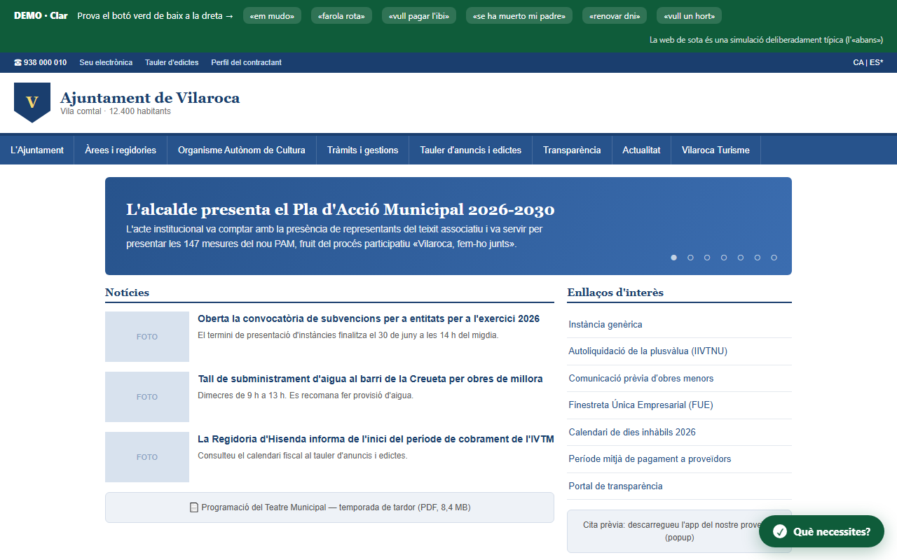

Producto propio

Producto propio · GovTech
Clar — trámites en lenguaje claro
Buscador de trámites municipales en lenguaje llano, integrable con una línea de script. De un estudio UX de 12 webs a producto: 39 trámites CA/ES, backend multi-tenant testeado.